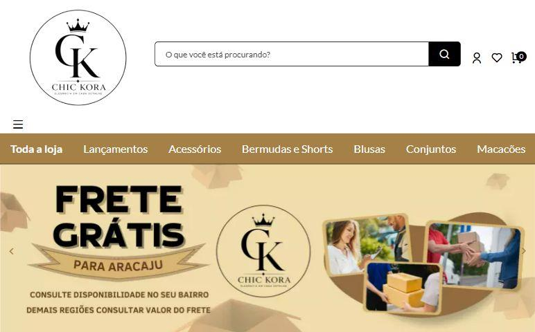
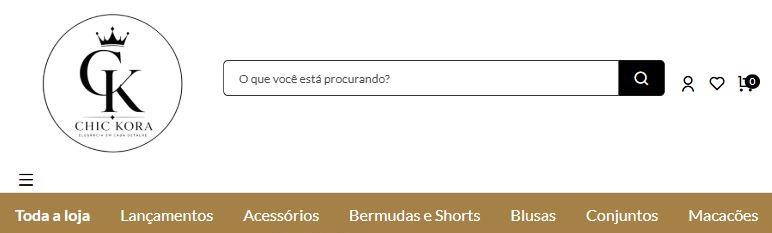
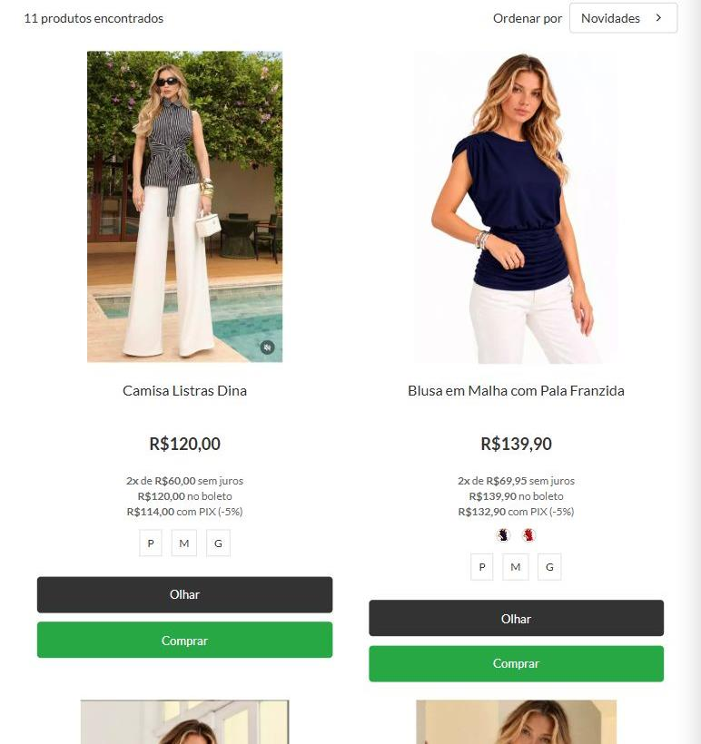
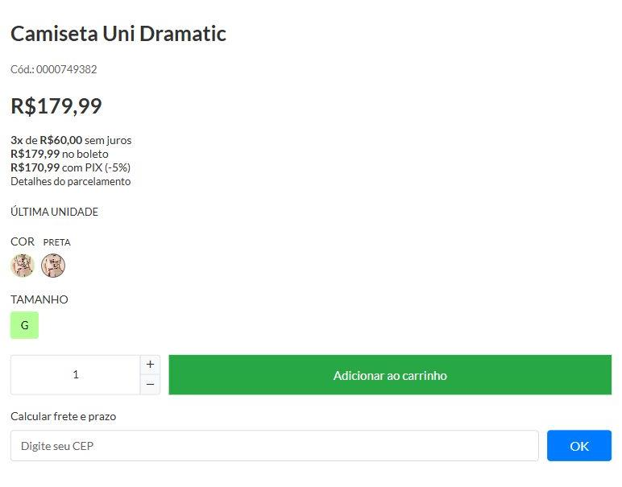
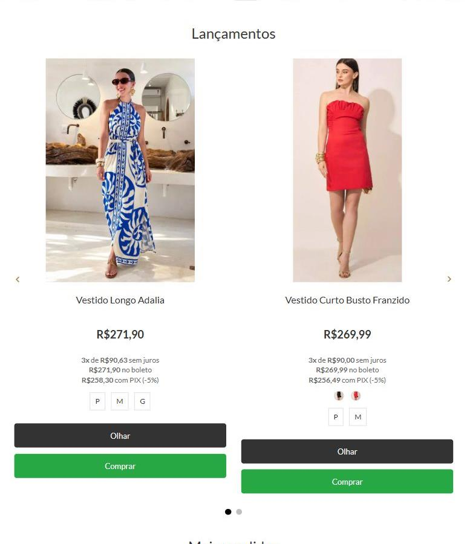
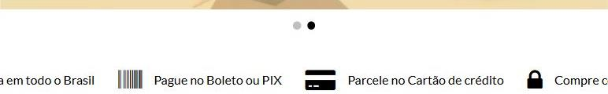
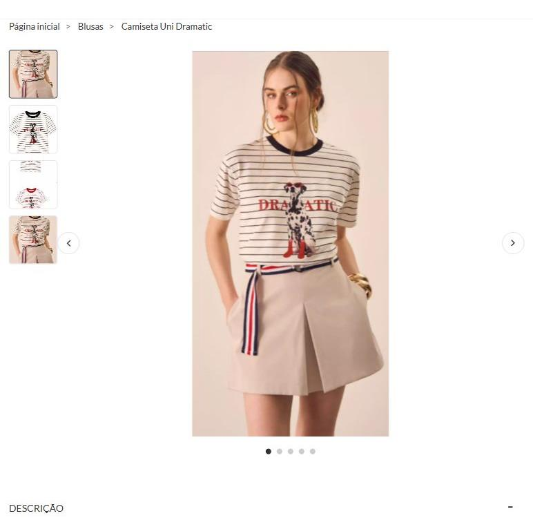

Uma marca que se destaca
Uma identidade visual consistente e fotografias cuidadas podem fortalecer a percepção de qualidade e tornar a loja mais memorável.
Uma experiência mais clara, moderna e preparada para transformar interesse em oportunidades de venda.

A Chic Kora já tem produtos, categorias e uma estrutura de venda. O próximo passo é conectar esses elementos em uma experiência visual que ajude a cliente a descobrir, escolher e comprar.
ANÁLISE VISUAL INICIAL · 09 NOV 2026
Logo, busca e menu são o primeiro contato com a loja. Uma organização mais compacta e uma linguagem visual coerente ajudam a valorizar a marca.
O frete é um benefício importante. Podemos torná-lo mais fácil de entender e dar à campanha da Black Friday uma comunicação própria e direta.

Uma vitrine consistente ajuda a comparar as peças. A proposta é trazer mais foco à fotografia e organizar as condições de pagamento.

A página já oferece cálculo de frete e Pix. Podemos aproximar as informações que respondem às principais dúvidas antes da compra.

Organizar as seções de acordo com as prioridades comerciais ajuda a cliente a encontrar categorias, novidades e produtos em destaque.

As informações de entrega, pagamento e segurança podem ganhar uma apresentação mais organizada. Nesta captura, a faixa aparece cortada nas laterais.

Uma galeria bem organizada ajuda a cliente a entender os detalhes da roupa e reforça a apresentação da marca.
Medir o carregamento da home e das páginas principais permitirá identificar oportunidades de otimização sem comprometer a qualidade visual.
A velocidade ainda precisa ser medida; o recorte mostra a página a ser analisada.
Cada melhoria tem um papel na jornada: atrair o olhar, ajudar na escolha e dar confiança para continuar a compra.
Uma identidade visual consistente e fotografias cuidadas podem fortalecer a percepção de qualidade e tornar a loja mais memorável.
Uma navegação clara e vitrines bem organizadas ajudam a cliente a chegar às peças e ofertas que procura.
Medidas, preço, entrega e troca em lugares fáceis de encontrar podem reduzir dúvidas durante a escolha.
Uma jornada mais fluida pode incentivar mais visitantes a avançar para o carrinho. O efeito será acompanhado pelos dados da loja.
Visitas → visualizações de produto → carrinhos → pedidos. A comparação com o período anterior ajuda a entender o impacto junto com oferta, tráfego, estoque e atendimento.
Uma boutique contemporânea: tons claros, preto e caramelo na loja da Chic Kora, combinados com fotografia consistente e uma navegação simples.
Marcas reais de moda que ajudam a visualizar soluções para a apresentação de produtos e ofertas.
Ofertas, preços e organização da categoria.
VISITAR SITE ↗02 / PRODUTOCards e apresentação das condições de compra.
VISITAR SITE ↗03 / NAVEGAÇÃOCategorias, filtros e identidade de marca.
VISITAR SITE ↗Referências visuais e funcionais. Os indicadores de conversão dessas lojas não foram verificados.
Alinhamento de objetivos, tema, integrações e materiais.
Direção visual, campanha e revisão da experiência.
Configuração da loja e aplicação das melhorias.
Conferência de layout, usabilidade e carregamento antes da publicação.
Selecione os serviços de cada alternativa e veja o investimento correspondente.
Renovação visual da loja, aproveitando a plataforma e a estrutura existentes.
Reconstrução em WooCommerce ou Shopify, com migração planejada.
Prazos estimados para o escopo completo, contados após acesso, recebimento dos materiais e alinhamento. Itens selecionados, aprovações e complexidade técnica podem alterar o prazo. Investimentos sujeitos à definição do escopo. Assinaturas, hospedagem, aplicativos, taxas e serviços adicionais são avaliados à parte. Migração de pedidos, clientes e integrações depende de análise técnica.